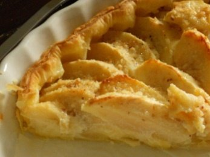

Tarte normande aux pommes
Ingrédients
×
- 1 pâte sablée
- 4 à 5 pommes
- 2 oeufs
- 100 g de sucre
- 100 g de poudre d'amande
- 100 g de crème épaisse
- quelques amandes effilées

Préparation
Étape 1
Foncer le moule avec 1 pâte sablée et la piquer à la fourchette.
Étape 2
Éplucher 4 à 5 pommes, les épépiner et les couper en lamelles assez épaisses. Les ranger sur la pâte en les faisant se chevaucher.
Étape 3
Battre 2 oeufs, ajouter 100 g de sucre, 100 g de poudre d'amande et 100 g de crème épaisse. Verser sur les pommes et parsemer de quelques amandes effilées.
Étape 4
Cuire 25min à 220ºC.
Résumé
1 pâte sablée
Foncer piquer
4 à 5 pommes
Éplucher couper en lamelles
2 oeufs
100 g de sucre
100 g de poudre d'amande
100 g de crème épaisse
quelques amandes effilées
Battre Verser
Cuire 220ºC